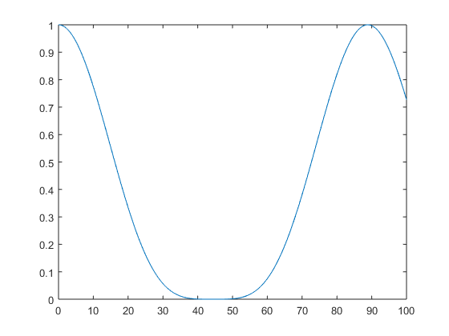

setState
Set the initial state of the system
Contents
Syntax
- setState(name,state)
- setState(state1,...,stateN)
Description
- setState(name,state) sets the state of subsystem name to be state. state needs to be an n-dimensional vector where n is the dimension of the subystem.
- setState(state1,...,stateM) sets the states of all subsystems in the system. For 3 subsystems, three vectors must be supplied that have the correct dimensions. The order in which the vectors are supplied must match the order in which the subsystems are added to the system.
Detailed Description and Examples
All supplied state vectors are expanded to density matrices and then further expanded via kronecker product with the other initial state matrices to the correct Hilbert space.
Example of two qbits coupled to a cavity.
s = System; %create a System a = Nlevel(1); %create an Nlevel system with two level, which have an energydifference of 1 a.u. s.addEntity(a,'qbit1'); %add the created qbit and call it qbit1 s.addEntity(Qoscillator(3,1),'cavity'); %add a quantum harmonic oscillator with 5 levels and energydiffernce of 1 a.u. s.addEntity(Nlevel(1),'qbit2'); %add another qbit and call it qbit2 s.addCoupling('qbit1','cavity',0.05); %add a coupling between the first qbit and the cavity s.addCoupling('qbit2','cavity',0.05); %add a coupling between the second qbit and the cavity s.setTmax(100); %set the maximum time s.setTimestep(0.1); s.setState('qbit1',[0 1]); %set qbit1 in the excited state s.simulate; % start the simulation plot(s.time,s.getEnergy('qbit1')); %plot the energy expectation value of the first qbit over time
The equivalent form in the alternative Syntax would have been setState([0 1], [1 0 0], [1 0]). All state vectors must be supplied as line vectors. The first elements corresponds to the lowest energy state.